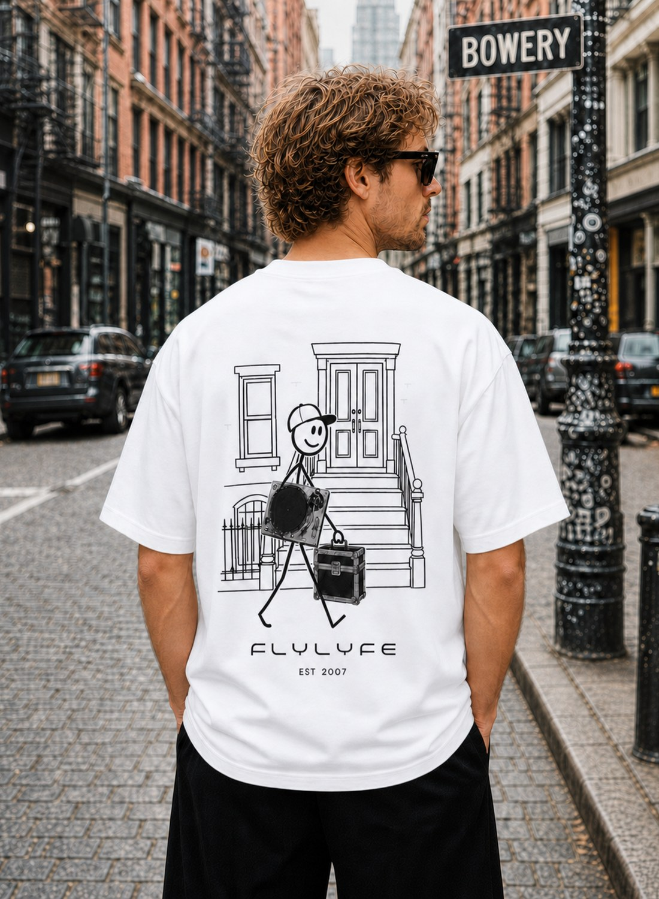

Concrete Rhythm · FLYLYFE
FLYLYFE — CONCRETE RHYTHM
Born in the city. Moved by the music.
Concrete Rhythm is the sound of the city keeping time. Stoops, side streets, and the walk home after the last record — drawn plain, printed big on heavyweight garment-dyed cotton.

$49.99The Brownstone DJ Tee
CONCRETE RHYTHM — the walk home after the last record.
About Concrete Rhythm
Concrete Rhythm is where FLYLYFE stops illustrating the music and starts photographing it. Every piece in the capsule pairs hand-drawn New York — stoops, wrought iron, the figures who move through it — against real photographed gear: turntables, flight cases, the tools that actually make the night happen. The contrast is the point.
Each tee is printed to order on the heavyweight Comfort Colors 1717, garment-dyed 100% ring-spun cotton, at $49.99 in sizes S–3XL. Back prints run oversized at 14 inches wide. Printed in Los Angeles, USA, and shipped worldwide.
More from FLYLYFE
Keep digging — DROP 02, DJ Tees, NYC Streetwear, and Festival & Rave.